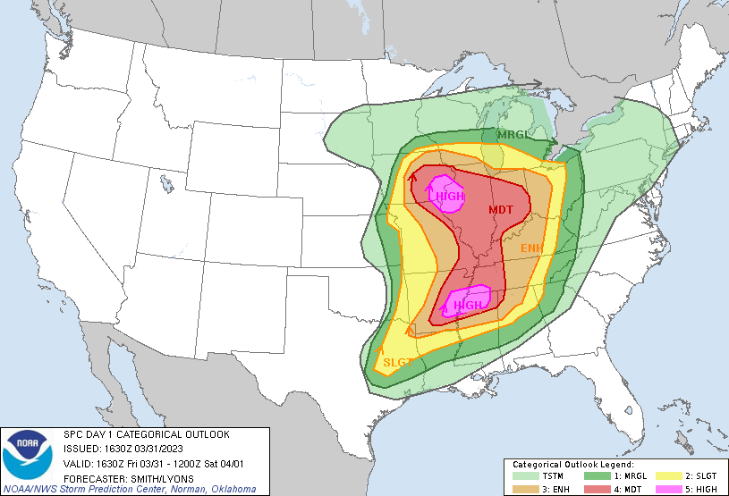
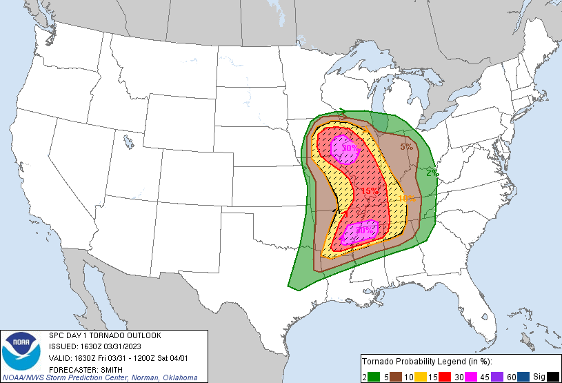
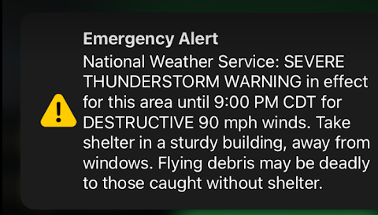

Tornado Sirens - Loud noise given off of a machine that is set off by wind speed/rotation
Television - Allows for slightly easier communication between a large group of people
Phones - Quick notifications for anyone that has a cellular device
News - Anyone watching the news can get earlier warning times
Maps/Radars - Allows for quick and easier understandment of storms
* Doppler Radar - Shows velocity and reactivity of storms
* Hook Echo - Shows a "hook" on the storm that indicates strong rotation
* Debris ball - Has a different color on the hook of a hook eco. Debris balls are debris in the atmosphere, usually caused by tornados
* Hail core - Shows a 3D image of updrafts. The higher chance of hail, usually means higher chance of tornados
* Rain wall - Usually surrounds a tornado. These walls can make it very diffcult to see through, making the tornado invisible to the human eye
Outlook - Gives a colorful visual to understand type of risks of severe storms
Types of tornadoes:
* Wedge
* Cone
* Rope
* Multi-Vortex
* Waterspouts/Landspouts
TIP: If you every see a tornado and it's not moving, take shelter as soon as possible. When a tornado does not seem to be moving, it is coming directly at you.

March 31st 2023 Convective Outlook at 1630Z (example showcasing all risk areas)

March 31st 2023 Tornado Outlook at 1630Z (example of products associated with the convective outlook, point out the hatched area indicates a significant threat of a tornado touching down within 25 miles of any given point in the area)

Example of a phone notification of a Wireless Emergency Alert (WEA), sent out in coordination with the EAS (This is a screenshot of an alert recieved on my phone during the March 31st , 2023 outbreak)